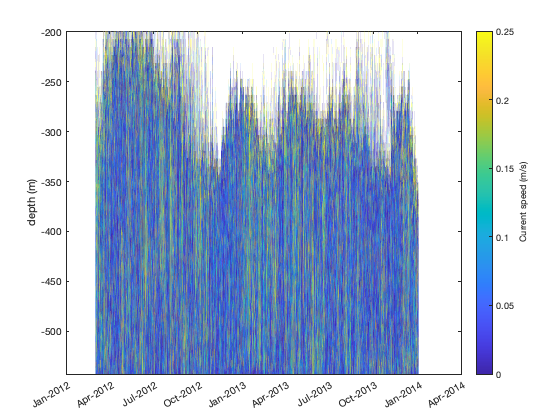
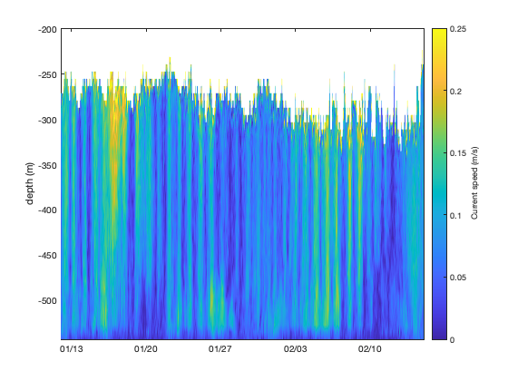
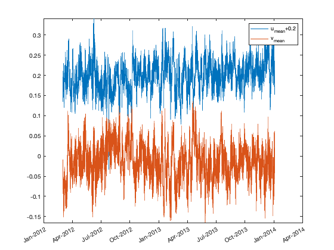
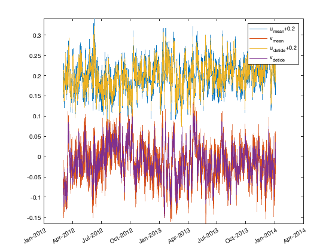
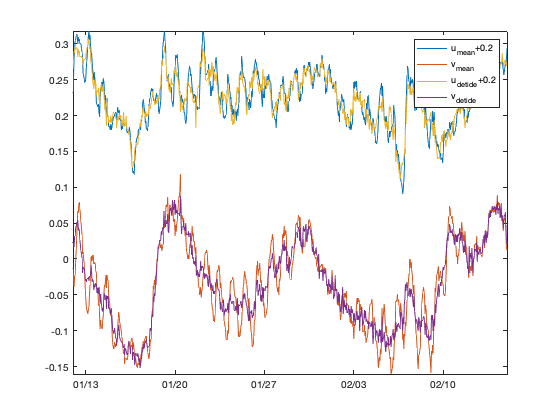
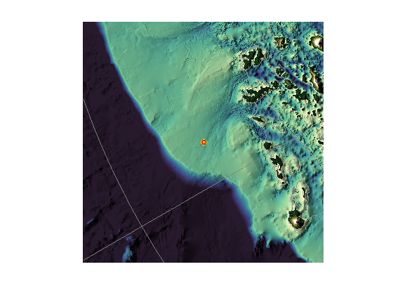
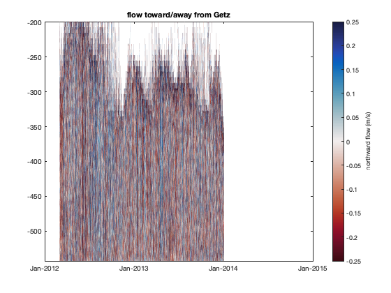
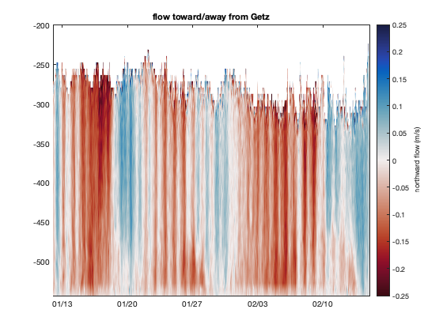
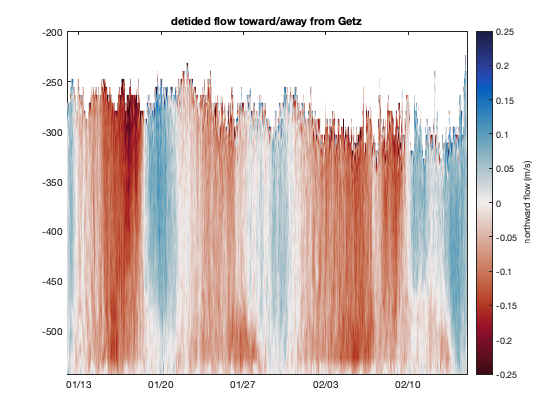
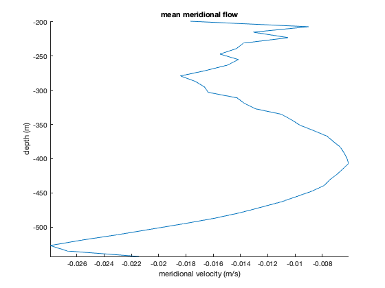

This tutorial covers how to detide and interpret ADCP (current) measurements near Getz Ice Shelf, Antarctica. Here we use the CATS tide model, but you can just as easily use any other TMD3.0 compatible if you wish.
Back to Tide Model Driver Contents.
Contents
View data file contents
The first step when exploring any new dataset is to see what's in the data file. Use ncdisp to find out:
ncdisp('ADCP_S112.nc')
Source:
/Users/cgreene/Documents/GitHub/Tide-Model-Driver/doc/ADCP_S112.nc
Format:
netcdf4_classic
Global Attributes:
Conventions = 'CF-1.7'
Description = 'ADCP current meter time series from a mooring near Getz Ice Shelf'
Data_source = 'Anna Wåhlin. 2017. WATER TEMPERATURE, SALINITY, and CURRENT VELOCITIES collected using RVIB Oden and RVIB Araon in the Amundsen Sea from 2010-02-15 to 2014-01-24 (NCEI Accession 0163357). NOAA NCEI Environmental Data Archive. {26A6DBC0-C484-40CE-A65C-49D52708D350}.'
Data_citation = 'La, H.S., Park, K., Wåhlin, A. et al. Zooplankton and micronekton respond to climate fluctuations in the Amundsen Sea polynya, Antarctica. Sci Rep 9, 10087 (2019). https://doi.org/10.1038/s41598-019-46423-1'
creation_date = '2022-06-03'
NetCDF_conversion = 'Chad A. Greene'
Dimensions:
time = 16127
z = 44
lat = 1
lon = 1
Variables:
time
Size: 16127x1
Dimensions: time
Datatype: double
Attributes:
long_name = 'Time variable'
units = 'days since 1950-01-01 00:00:00'
z
Size: 44x1
Dimensions: z
Datatype: double
Attributes:
long_name = 'approximate elevation relative to sea level'
standard_name = 'elevation'
units = 'meters'
lat
Size: 1x1
Dimensions: lat
Datatype: double
Attributes:
long_name = 'latitude'
standard_name = 'latitude'
units = 'degrees'
lon
Size: 1x1
Dimensions: lon
Datatype: double
Attributes:
long_name = 'longitude'
standard_name = 'longitude'
units = 'degrees'
u
Size: 44x16127
Dimensions: z,time
Datatype: single
Attributes:
long_name = 'measured zonal current, corrected for declination'
standard_name = 'zonal current'
units = 'm/s'
v
Size: 44x16127
Dimensions: z,time
Datatype: single
Attributes:
long_name = 'measured meridional current, corrected for declination'
standard_name = 'meridional current'
units = 'm/s'
Load data
Above you see that the units of time are days since Jan 1, 1950. So when we import time into Matlab's datenum format, just add the datenum of Jan 1, 1950. Load all the other data too.
t = ncread('ADCP_S112.nc','time') + datenum(1950,1,1,0,0,0); lat = ncread('ADCP_S112.nc','lat'); lon = ncread('ADCP_S112.nc','lon'); z = ncread('ADCP_S112.nc','z'); u = ncread('ADCP_S112.nc','u'); v = ncread('ADCP_S112.nc','v');
Plot current speed
Plot "speed" as the hypotenuse of u and v:
figure pcolor(t,z,hypot(u,v)) shading interp ylabel 'depth (m)' datetick('x','mmm-yyyy') cb = colorbar; ylabel(cb,'Current speed (m/s)') caxis([0 0.25]) % makes small signals more visible
According to Anna Wåhlin,
The missing data at the top is likely due to loss of backscatter signal, caused by too much energy being lost in the water column and/or lack of scatterers in that level. The range of this instrument is about 300 m so it is to be expected. We placed them at the bottom looking upwards in order to capture the lower currents - sometimes we place a second ADCP further up in order to get the whole water column but not [at this location].
Let's zoom in on a few weeks to make the time series more sensible:
xlim([datenum(2013,1,12) datenum(2013,2,15)]) datetick('x','keeplimits')
Above, you can see the tidal signals pulsating the entire water column.
Plot mean currents
Here are the mean zonal and meridional components. (Adding an 0.2 offset for display purposes):
u_mean = mean(u,'omitnan')'; v_mean = mean(v,'omitnan')'; offset = 0.2; % for display purposes figure plot(t,u_mean+offset) hold on plot(t,v_mean); legend('u_{mean}+0.2','v_{mean}') axis tight datetick('x','mmm-yyyy')
Predict tides
Get the predicted zonal and meridional components of the tidal current at the mooring location:
% (My) file path to the model file: fn = 'CATS2008_update_2022-06-05.nc'; % Predict tidal velocities: u_pred = tmd_predict(fn,lat,lon,t,'u'); v_pred = tmd_predict(fn,lat,lon,t,'v'); plot(t,u_mean+offset-u_pred) hold on plot(t,v_mean-v_pred); legend('u_{mean}+0.2','v_{mean}','u_{detide}+0.2','v_{detide}')
Zoom in for clarity:
xlim([datenum(2013,1,12) datenum(2013,2,15)]) datetick('x','keeplimits')
Above, the tidal currents have been removed from the zonal and meridional components of the current. All that remains is the residual water flow that isn't driven by tides (and any tidal energy that wasn't perfectly accounted for in the CATS model).
Flow into/out of a trough
Optional: Use Antarctic Mapping Tools and Climate Data Tools to plot a map of the area surrounding the mooring, for context:
figure mapzoomps(lat,lon,'mapwidth',700) % zooms a map on the mooring bedmachine('bed') % plots bed depth bedmachine % plots grounding line hold on plotps(lat,lon,'yo','linewidth',4) % mooring location plotps(lat,lon,'ro','linewidth',2) caxis([-1 1]*2000) cmocean topo % CDT topographic colormap axis off shadem(4,[225 80]) % hillshade graticuleps % lat/lon grid
In the map above, we see the north/south motion of the water roughly corresponds to flow out/into trough that leads to Getz Ice Shelf. Here's just the meridional component of ADCP velocity, to show flow into and out of the trough:
figure pcolor(t,z,v) shading interp cb = colorbar; ylabel(cb,'northward flow (m/s)') caxis([-1 1]*0.25) cmocean -balance % colormap axis tight datetick('x','mmm-yyyy') title 'flow toward/away from Getz'
In the time series above, red flows south (toward Getz) while blue flows north. Here's a zoom-in:
xlim([datenum(2013,1,12) datenum(2013,2,15)]) datetick('x','keeplimits')
And here's the same thing, detided:
v_detide = v - v_pred'; figure pcolor(t,z,v_detide) shading interp cb = colorbar; ylabel(cb,'northward flow (m/s)') caxis([-1 1]*0.25) cmocean -balance % colormap axis tight xlim([datenum(2013,1,12) datenum(2013,2,15)]) datetick('x','keeplimits') title 'detided flow toward/away from Getz'
Baroclinic flow
Until now, we've applied the mean predicted tidal currents to the entire water column. In reality, the strength of any water flow in the ocean is a function of depth. Here's the mean meridional velocity at this mooring:
v_barotropic = mean(v,2,'omitnan'); figure plot(v_barotropic,z) box off axis tight xlabel 'meridional velocity (m/s)' ylabel 'depth (m)' title 'mean meridional flow'
The plot above shows that mean flow is negative (southward, or toward Getz) throughout the entire water column, but is particularly strong near the bottom of the water column.
How much of the mean flow is driven by tides?
v_tidal_mean = mean(v_pred)
v_tidal_mean =
0.00
That tiny value of mean tidal velocity tells us that effectively none of the mean flow here is driven by tidal forcing.
Water transports versus velocities
By default, TMD calculates transport variables (m^2/s), then divides them by water column thickness to get barotropic tidal velocity (m/s). If bathymetry in the model is inaccurate, then errors in predicted currents will scale with the bathymetry error.
In this particular case, we know the depth of the mooring, which is
z(1)
ans =
-543.00
How accurate is the model bathymetry at the location of this mooring? Entering the model filename fn which we defined above, we can get the water column thickness at this location:
wct_model = tmd_interp(fn,'wct',lat,lon)
wct_model =
553.22
Just a few meters off! When you account for potential error in the mooring depth measurement, and the fact that mooring location may not perfectly represent the mean depth of the entire model grid cell, I'd say these two values are just about equal.
If you ever encounter a case where the water column thickness in the model is drastically different from the known wct, I recommend predicting the transport (capital U and V), then divide by your known wct.
Author Info
This tutorial was written by Chad A. Greene, June 2022.